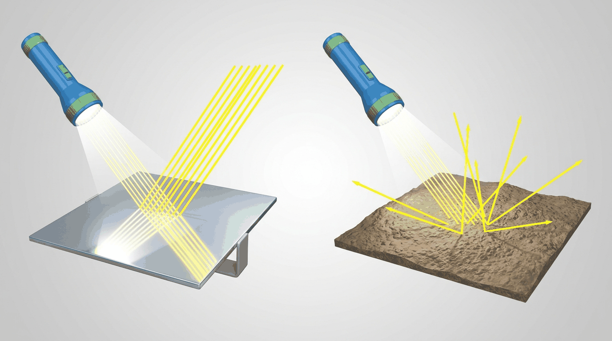

الشكل (2): حركة الشمس الظاهرية وتغير طول واتجاه الظلال (Sun Movement & Shadow Direction)
الجزء الأول: الشرح المصور والمفصل والتطبيقات العملية
"Look at my shadow on the ground! In the morning it looks super tall like a giant, but at noon it shrinks! Why does my shadow move and change size? Let's investigate the secrets of light!"
بصوا يا أصدقائي على ظلي في الأرض! الصبح بدري بيكون طويل جداً زي العملاق، وفي الظهر بيبقى قصير وصغير أوي! يا ترى الظل بيتكون إزاي؟ وليه الشمس بتتحكم فيه؟

Objects that emit their own light: The Sun, Lamps, Flashlights, Fire, Candles.
*Note: The Moon is NOT a light source; it reflects sunlight like a mirror!
الأجسام التي تشع ضوءها بنفسها مثل: الشمس، المصابيح، الكشاف، النار، والشموع.
*ملاحظة هامة: القمر ليس مصدراً للضوء، بل يعكس ضوء الشمس كمرآة!
Light ALWAYS travels in Straight Lines! It never bends around corners on its own.
يسير الضوء دائماً في خطوط مستقيمة (Straight lines) ولا ينحني بنفسه حول الزوايا.
When sunlight hits a smooth, shiny surface like a Mirror, it bounces back and continues traveling in straight lines. We can use mirrors to redirect light to dark places!
ارتداد الضوء عندما يسقط على سطح أملس ولامع مثل المرآة، فيرتد ويسير في خطوط مستقيمة، ويمكننا به توجيه الضوء للأماكن المظلمة!
Using a magnifying glass (convex lens), you can gather sunlight from a wide area into a single focal point (spot).
| Property (الخاصية) | What happens at the gathered point? (ماذا يحدث عند النقطة المجمعة؟) |
|---|---|
| Brightness (السطوع) | The spot becomes much brighter (أكثر سطوعاً ولمعاناً). |
| Temperature / Warmth (الحرارة) | The temperature rises and the spot becomes much warmer / hotter (أكثر دفئاً وسخونة). |
Because sunlight travels in straight lines, when it hits an opaque object (like your body or a tree), the light is blocked. A dark area forms behind it called a Shadow.
لأن الضوء يسير في خطوط مستقيمة، فعندما يقابل جسماً معتماً (كجسمك أو شجرة)، يُحجب الضوء وتتكون منطقة مظلمة خلفه تسمى الظل (Shadow).
The shadow is ALWAYS made in the OPPOSITE direction to the light source!
• If the Sun is on the Right ➔ Shadow is on the Left.
• If the Sun is in the East ➔ Shadow points to the West.
| Time of Day (الوقت) | Sun Position (موقع الشمس) | Shadow Direction & Length (اتجاه وطول الظل) |
|---|---|---|
| Morning (الصباح) | Rises low in the East (الشرق) | Shadow is LONG and points to the WEST (الغرب) |
| Noon (الظهيرة) | High directly overhead in the sky | Shadow is the SHORTEST (أقصر ظل في اليوم) |
| Afternoon (بعد الظهر) | Moves low towards the West (الغرب) | Shadow is LONG and points to the EAST (الشرق) |
| Feature | Sunny Ground (الأرض المشمسة) | Shady Ground (الأرض في الظل) |
|---|---|---|
| Temperature (الحرارة) | Warmer (higher temperature) أكثر دفئاً وسخونة بسبب أشعة الشمس |
Cooler (lower temperature) أبرد لأن الشمس محجوبة عنها |
| Moisture (الرطوبة) | Dry (dries quickly) جافة لأن الشمس تبخر الماء |
Damper / Moister أكثر رطوبة وبللاً وتحتفظ بالماء |
Game: "The Balcony Sundial" (اصنع ساعتك الشمسية بالبلكونة)
الأدوات: ورقة كرتون بيضاء + قلم رصاص مثبت في المنتصف بعجينة صلصال + شمس الصباح.
طريقة اللعبة:
1. The bouncing back of light rays when they hit a smooth reflective surface like a mirror. ( .............................. )
2. A dark area formed behind an opaque object when light falls on it. ( .............................. )
1. Light travels in:
a) Curved lines b) Zigzag lines c) Straight lines d) Circular lines
2. When the sun is in the East, the shadow points to the:
a) East b) West c) North d) South
3. At noon, the length of an object's shadow is:
a) Longest b) Shortest c) Disappears completely d) Unchanged
1. Shadows are formed when light hits your body.
Reason: ............................................................................................................
2. The spot of light gathered by a magnifying glass becomes hot.
Reason: ............................................................................................................
1. straight 2. bounces 3. opposite 4. shortest 5. warmer
1. ✘ False (The Moon is not a light source; it reflects sunlight).
2. ✔ True
3. ✘ False (Shady ground is cooler and damper).
1. Reflection of light (انعكاس الضوء).
2. Shadow (الظل).
1. c) Straight lines (الضوء يسير في خطوط مستقيمة).
2. b) West (الظل دائماً في عكس اتجاه الشمس).
3. b) Shortest (في الظهيرة يكون الظل أقصر ما يمكن).
1. Because light travels in straight lines and cannot pass through the opaque body, so a dark area is formed behind it.
لأن الضوء يسير في خطوط مستقيمة ويُحجب عندما يقابل جسماً معتماً فيتكون خلفه ظل.
2. Because the magnifying glass gathers sunlight and thermal energy from a wide area into a single focal point.
لأن العدسة المكبرة تجمع أشعة الشمس والحرارة من مساحة واسعة في نقطة واحدة مركزة.